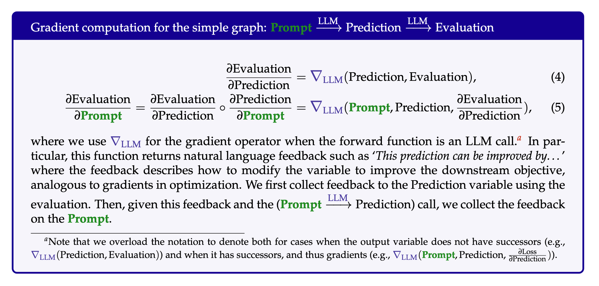
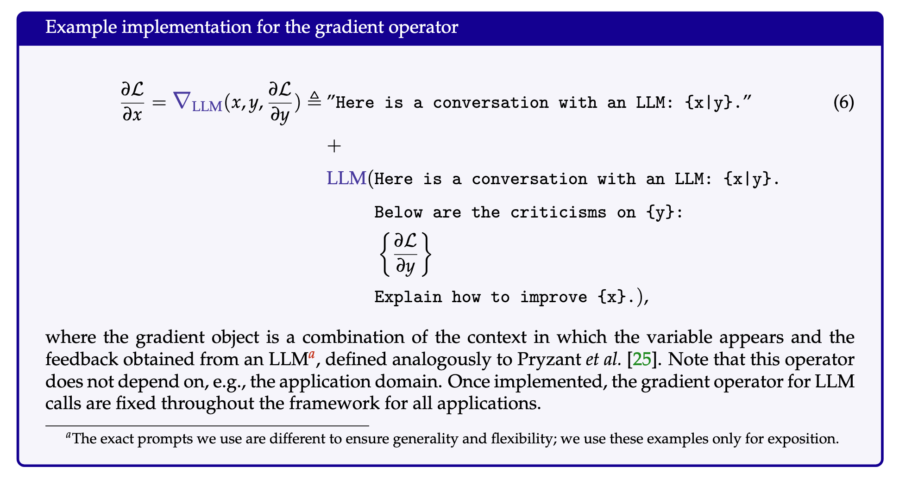
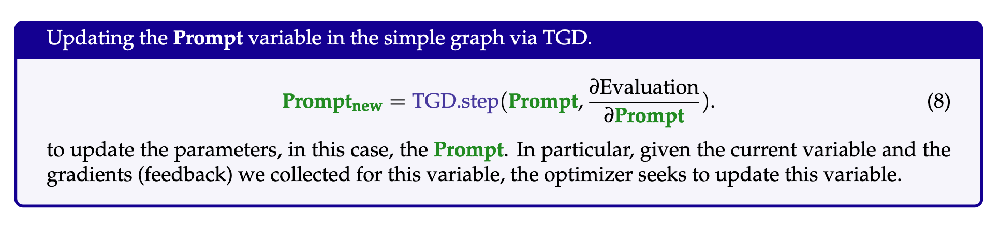

TextGrad Automatic Differentiation via Text
Abstract
AI is undergoing a paradigm shift, with breakthroughs achieved by systems orchestrating multiple large language models (LLMs) and other complex components. As a result, developing principled and automated optimization methods for compound AI systems is one of the most important new challenges. Neural networks faced a similar challenge in its early days until backpropagation and automatic differentiation transformed the field by making optimization turn-key. Inspired by this, we introduce TextGrad, a powerful framework performing automatic ”differentiation” via text. TextGrad backpropagates textual feedback provided by LLMs to improve individual components of a compound AI system. In our framework, LLMs provide rich, general, natural language suggestions to optimize variables in computation graphs, ranging from code snippets to molecular structures. TextGrad follows PyTorch’s syntax and abstraction and is flexible and easy-to-use. It works out-of-the-box for a variety of tasks, where the users only provide the objective function without tuning components or prompts of the framework. We showcase TextGrad’s effectiveness and generality across a diverse range of applications, from question answering and molecule optimization to radiotherapy treatment planning. Without modifying the framework, TextGrad improves the zero-shot accuracy of GPT-4o in Google-Proof Question Answering from to , yields relative performance gain in optimizing LeetCode-Hard coding problem solutions, improves prompts for reasoning, designs new druglike small molecules with desirable in silico binding, and designs radiation oncology treatment plans with high specificity. TextGrad lays a foundation to accelerate the development of the next-generation of AI systems.
To optimize the new generation of AI systems, we introduce TEXTGRAD, automatic differentiation via text. Here we use differentiation and gradients as a metaphor for textual feedback from LLMs. In this framework, each AI system is transformed into a computation graph, where variables are inputs and outputs of complex (not necessarily differentiable) function calls. The feedback to the variables (dubbed ‘textual gradients’ [25]) are provided in the form of informative and interpretable natural language criticism to the variables; describing how a variable should be changed to improve the system. The gradients are propagated through arbitrary functions, such as LLM API calls, simulators, or external numerical solvers. (p. 2)



In the backward pass, gradients on variables through individual loss terms are concatenated, mirroring backpropagating through addition. (p. 7)
We use the analogy to momentum in gradient descent [40, 41]. When optimizing a variable, the TGD optimizer can optionally see the earlier iterations of the variable when making the update. (p. 7)
Over the optimization trajectory, the solution is refined using this test-time self-evaluation. More generally, this idea is known as test-time training [42, 43], where a machine learning model is trained on a test instance at test-time, often with a self-supervised objective. Similarly, recent work have shown the merits of self-refinement also for reasoning tasks [26, 30, 44]. In particular, even though an LLM may not get the answer to a question or the solution to a problem right at first attempt, it can improve the response through iterative refinement. (p. 8)
Notes
TL;DR
TextGrad backpropagates textual feedback provided by LLMs to improve individual components of a compound AI system, a powerful framework performing automatic “differentiation” via text that lays a foundation to accelerate the development of the next-generation of AI systems.
@misc{Yuksekgonul_Bianchi_Boen_Liu_Huang_Guestrin_Zou_2024, title={TextGrad: Automatic “Differentiation” via Text}, url={[https://arxiv.org/abs/2406.07496v1](https://arxiv.org/abs/2406.07496v1)}, abstractNote={AI is undergoing a paradigm shift, with breakthroughs achieved by systems orchestrating multiple large language models (LLMs) and other complex components. As a result, developing principled and automated optimization methods for compound AI systems is one of the most important new challenges. Neural networks faced a similar challenge in its early days until backpropagation and automatic differentiation transformed the field by making optimization turn-key. Inspired by this, we introduce TextGrad, a powerful framework performing automatic ``differentiation’’ via text. TextGrad backpropagates textual feedback provided by LLMs to improve individual components of a compound AI system. In our framework, LLMs provide rich, general, natural language suggestions to optimize variables in computation graphs, ranging from code snippets to molecular structures. TextGrad follows PyTorch’s syntax and abstraction and is flexible and easy-to-use. It works out-of-the-box for a variety of tasks, where the users only provide the objective function without tuning components or prompts of the framework. We showcase TextGrad’s effectiveness and generality across a diverse range of applications, from question answering and molecule optimization to radiotherapy treatment planning. Without modifying the framework, TextGrad improves the zero-shot accuracy of GPT-4o in Google-Proof Question Answering from $51%$ to $55%$, yields $20%$ relative performance gain in optimizing LeetCode-Hard coding problem solutions, improves prompts for reasoning, designs new druglike small molecules with desirable in silico binding, and designs radiation oncology treatment plans with high specificity. TextGrad lays a foundation to accelerate the development of the next-generation of AI systems.}, journal={arXiv.org}, author={Yuksekgonul, Mert and Bianchi, Federico and Boen, Joseph and Liu, Sheng and Huang, Zhi and Guestrin, Carlos and Zou, James}, year={2024}, month=jun, language={en} }